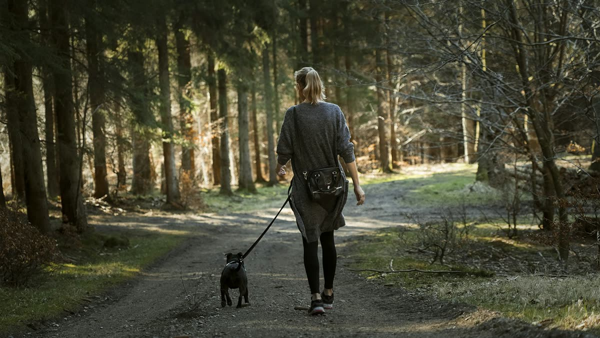

Dogs in Lane County, including Eugene, generally need a county dog license and current rabies vaccination. Dogs should be leashed in public unless in a designated off-leash area. Rules change, so confirm details with Lane County Animal Services and the City of Eugene.
Licensing basics
Licensing helps lost dogs get home faster. Keep the tag on your dog’s collar along with an ID tag with your phone number.
Leash basics
Expect to leash in parks, on trails, on sidewalks and in shared spaces. Designated off-leash areas are the main exception.
What we ask of clients
- A current rabies vaccination record
- A collar with ID and license tags
- A well-fitted leash and harness or collar
FAQ
Is this legal advice?
No. This is a general overview. Always check the official Lane County and City of Eugene sources for current rules.
Do your walkers carry a backup leash?
Yes, every walker carries a spare slip lead in case of gear failure.
General information for Eugene dog owners, not veterinary or legal advice. Always check with your vet and official sources.